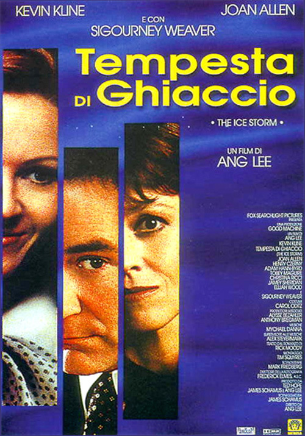
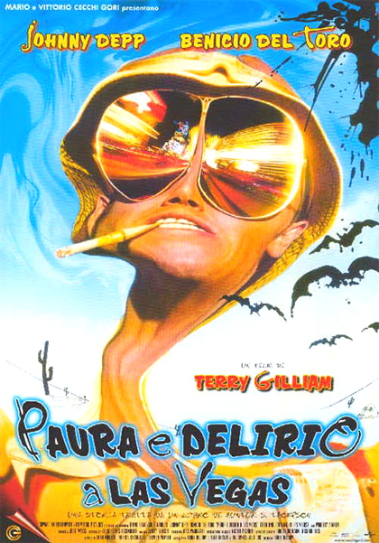
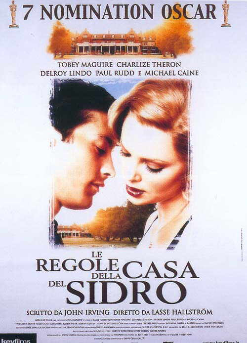
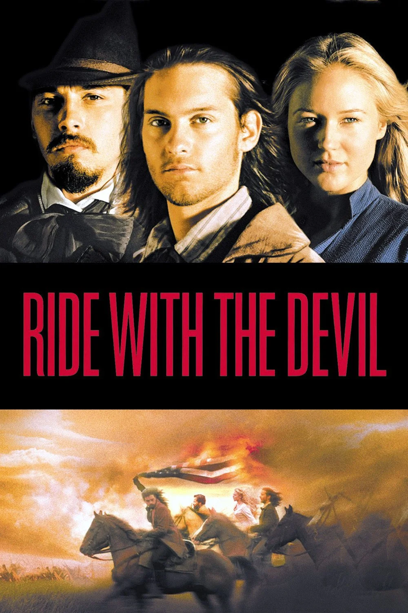
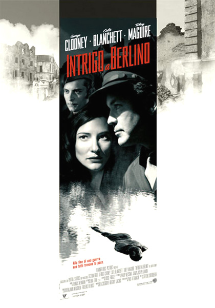
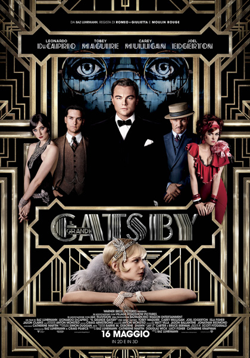
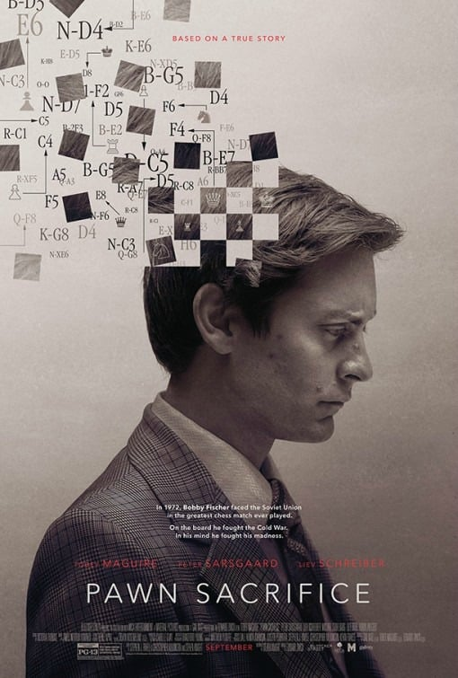

Introduzione
Tobias Vincent Maguire, detto Tobey nato a Santa Monica il 27 giugno 1975, è un attore e produttore cinematografico statunitense.
È principalmente noto per aver interpretato Spider-Man nell'omonima trilogia cinematografica diretta da Sam Raimi e nel più recente film appartenente al Marvel Cinematic Universe, Spider-Man: No Way Home, che gli è valso il Guinness dei primati per "la carriera più lunga come personaggio Marvel live action", ma ha anche ricevuto il plauso dalla critica per le sue interpretazioni drammatiche in film come Brothers e La grande partita; insieme ad altre numerose interpretazioni in celebri film come Le regole della casa del sidro, Wonder Boys, Paura e delirio a Las Vegas, Pleasantville, Seabiscuit - Un mito senza tempo, Il grande Gatsby e Babylon.
Biografia
Tobey è figlio di Wendy Brown (una sceneggiatrice e produttrice) e di Vincent Maguire (un cuoco). Wendy e Vincent non sono ancora sposati alla nascita di Tobey; una volta unitisi in matrimonio, però, divorziano poco tempo dopo, quando il figlio ha appena due anni, questo costringerà Tobey a passare l'infanzia trasferendosi da una città all'altra, vivendo un po' con la madre, un po' con il padre e un po' con altri familiari.
Con il passare del tempo, si appassiona alla cucina e sviluppa il desiderio di diventare uno chef: per questo manifesta ai genitori il proposito di frequentare una scuola apposita. La madre, tuttavia, gli offre cento dollari per frequentare lezioni di recitazione, e Tobey accetta, dando inizio alla sua carriera si attore.
Carriera cinematografica
(1989-1995)
Il suo primo ruolo da attore come comparsa risale al 1989, nel film Il piccolo grande mago dei videogames. Nei primi tempi era solito interpretare personaggi più giovani rispetto alla sua età reale: addirittura nel 2002 Tobey sullo schermo era ancora un adolescente, nonostante i suoi 27 anni. È apparso in una lunga serie di pubblicità e ruoli minori (uno dei quali a fianco di Chuck Norris in Walker Texas Ranger). È stato scritturato per il ruolo principale in Great Scott, una serie televisiva prodotta dalla FOX che fu cancellata dopo cinque settimane di programmazione.
Nel 1995, Tobey Maguire è stato scelto per un ruolo da protagonista nel film Empire Records, ma a causa dei suoi problemi con l'alcolismo è uscito a metà strada dal film.
Nel 1997 ottiene il ruolo di Paul Hood, un adolescente in collegio la cui narrazione introduce l'azione nel film di Ang Lee Tempesta di ghiaccio.
Nel film del 1998 Paura e delirio a Las Vegas ha interpretato un autostoppista che incontra Raoul Duke e il dottor Gonzo durante il loro viaggio a Las Vegas al fianco di Johnny Depp e Benicio del Toro.
Segue una serie di film in cui veste i panni di un ragazzo impegnato nel raggiungimento della maturità: Pleasantville, Le regole della casa del sidro e Wonder Boys, grazie alla quale ottiene la sua prima candidatura agli Screen Actors Guild Award insieme al resto del cast.
Dopo questi film Maguire è diventato noto come un attore versatile in grado di interpretare un'ampia varietá di ruoli.
Nel film Cavalcando col diavolo del 1999, Maguire ha interpretato Jakob Roedel, al fianco di Jewel Kilcher . Qui interpreta il figlio di un immigrato tedesco unionista che si unisce ai suoi amici del sud nei cavalieri del Missouri, vendicando le atrocità commesse contro i Missouri dai Kansas Jayhawkers e dai redleggers.
Nel 2001, Maguire ha interpretato un ruolo che ha caratterizzato la sua voce dal suono giovanile, un cucciolo di beagle di nome Lou, nel film per famiglie Cats & Dogs.
(2002-2013)
Nel 2002, Maguire ha recitato in Spider-Man nei panni del protagonista, basato sul popolare supereroe Marvel Comics diretto dal regista Sam Raimi. Il film è stato un grande successo e ne ha fatto una star. Ha ripreso il ruolo nei sequel Spider-Man 2 (2004) e Spider-Man 3 (2007), e ha anche fornito la voce di Spider-Man per gli adattamenti dei videogiochi dei film. Tutti e tre i film hanno continuato a far parte dei film di maggior incasso ogni anno e le capacità di recitazione di Maguire sono state elogiate dalla critica.
La sua interpretazione di Spider-Man gli è valsa delle ottime recensioni. Mark Caro del Chicago Tribune ha scritto che "con i suoi occhi grandi, rotondi e pieni di sentimento, Maguire è sempre stato in grado di trasmettere un senso di meraviglia, e anche il suo istinto per l'eufemismo gli serve bene qui". A causa di complicazioni nella sceneggiatura e nella produzione, un quarto film di Spider-Man proposto non si è concretizzato. La Columbia Pictures di Sony ha deciso di riavviare il franchise. Il film, intitolato The Amazing Spider-Man, è uscito il 3 luglio 2012, con un attore diverso, Andrew Garfield, che interpretava il ruolo principale.
Ha consolidato la sua notorietà nel 2003 con il ruolo del fantino John M. "Red" Pollard nell'acclamato Seabiscuit - Un mito senza tempo, riguardo al famoso cavallo da corsa americano, grazie alla quale ottiene la sua seconda candidatura agli Screen Actors Guild Award insieme agli altri membri del cast.
Nel 2006, ha recitato nel suo primo ruolo malvagio nel ruolo del caporale Patrick Tully al fianco di George Clooney e Cate Blanchett nel film Intrigo a Berlino di Steven Soderbergh, basato sull'omonimo romanzo di Joseph Kanon. È anche un produttore i cui crediti di produzione includono 25th Hour 2002, Qualunque cosa facciamo 2003 e Seabiscuit 2003, per i quali è stato produttore esecutivo.
Nel 2008, ha fatto un'apparizione cameo nella commedia d'azione Tropic Thunder.
Nel 2009 è il protagonista, a fianco di Natalie Portman e Jake Gyllenhaal, di Brothers, per la cui interpretazione riceve il plauso dalla critica ed ottiene una candidatura ai Golden Globe. Nel 2011 è stato protagonista del film The Details. Avrebbe dovuto riprendere il ruolo di Spider-Man in Spider-Man 4 nel 2011, film che sarebbe stato diretto nuovamente da Sam Raimi ma la Sony Pictures Entertainment cancellò il fiilm nel 2010 per poi fare The Amazing Spider-Man nel 2012, film che fa da reboot alla trilogia, il film ha avuto un sequel nel 2014.
Nel 2012 ottenne un piccolo cameo nel film Vita di Pi di Ang Lee ma fu poi sostituito a causa della sua troppa notorietà, che andava contro il resto del cast, formato da soli attori sconosciuti.
(2013-2021)
Nel 2013 ha recitato al fianco di Leonardo DiCaprio nel film Il grande Gatsby e nel 2014 interpreta il celebre scacchista Bobby Fischer nel film La grande partita, grazie alla quale riceve lodi particolari sulla sua performance da gran parte della critica. Nel 2017 è tra le voci del cartone animato Baby Boss. Da quest'anno si prenderá una pausa dalla recitazione per motivi personali per poi tornare a recitare nel 2021.
(2021-presente)
Nel 2021 torna a vestire i panni di Spider-Man (la stessa versione della trilogia diretta da Sam Raimi) nel film del Marvel Cinematic Universe Spider-Man: No Way Home, qui però il protagonista sarà uno Spider-Man interpretato da Tom Holland mentre quello di Maguire è un personaggio appartenente ad un universo alternativo insieme a quello di Andrew Garfield (Spider-Man appartenente ai due film di Marc Webb). Grazie a questo film Maguire ottiene il Guinness dei primati per la carriera più lunga come personaggio della Marvel.
Nel 2022 ha preso parte al film Babylon diretto da Damien Chazelle a fianco di Brad Pitt e Margot Robbie.

Tempesta Di Ghiaccio (1997)

Paura e delirio a Las Vegas (1998)

Le regole della casa del sidro (1999)

Cavalcando col diavolo (1999)

Intrigo a Berlino (2006)

Il grande Gatsby (2013)

La grande partita (2014)
Spider-Man:
No Way Home (2021)